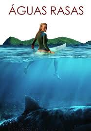

Águas Rasas
O filme conta a história de Nancy (Blake Lively), uma jovem médica que está tendo de lidar com a recente perda da mãe, e um dia, Nancy vai surfar em uma praia isolada, onde acaba sendo atacada por um enorme tubarão.
Assista aqui!O filme conta a história de Nancy (Blake Lively), uma jovem médica que está tendo de lidar com a recente perda da mãe, e um dia, Nancy vai surfar em uma praia isolada, onde acaba sendo atacada por um enorme tubarão.
Assista aqui!